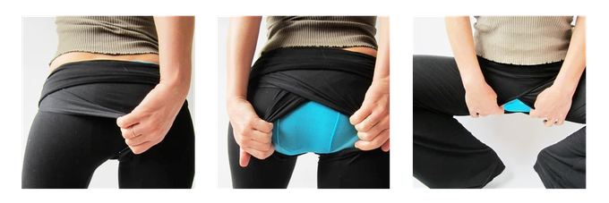
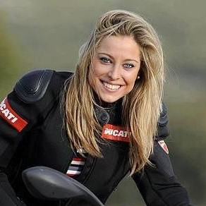
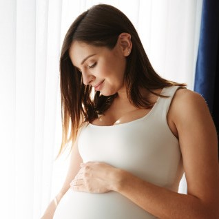

Privacy, Durability, Flexibility
Our patented fly is held together by tension, creating a seamless, flattering, soft, and easy-to-use feature in the most comfortable and stylish basic black pants that every woman needs.
Pockets, Pockets, Pockets
Our 4-way stretch fabric is flexible and molds to your body. If you are between sizes you can choose if you prefer your pants to be tight enough to provide compression, or just fit your body in a gentle manner.
Eco-Friendly
Chickfly pants are made from sustainable bamboo. We chose Canadian company Oratex’s Eco-tech line because they met our high standards. The material is 93% sustainable bamboo with 7% lycra for stretch. This Eco-stretch fabric achieves acme standards of environmental friendliness and quality.
My Story
As a field scientist and general contractor I work with
a lot of men on outdoor projects, and peeing in privacy can be a challenge.
I am a feminist, traveler and environmentalist;
I look for solutions
that have synergistic benefits. I work toward ecological solutions
that help promote equality.
Testimonials
"Solves Problems"
“These pants quickly became my favorites for their sheer comfort,
ease of use, and gorgeous, flattering style. After years of use,
I'm now shocked at just how many problems they solve. They make so
many things I do easier and safer, from jumping off my motorcycle
to pee on the side of the road without having to remove my gear.”
— K. Shea, Fort Bragg, CA
"These pants fit through pregnancy"
“They were not only the only pants that fit perfectly all through pregnancy but also the only ones to accommodate the frequent pregnant pee stops with minimal effort or exposure.” — K. Shea, Fort Bragg, CA
“Get 10 pairs!”
“Pretty much everyone as soon as they see how they work - they go apeshit for them. Seriously, my boyfriend is like 'Get 10 pairs. Why would you take those off?'" — Z. Platek, Ithaca, NY